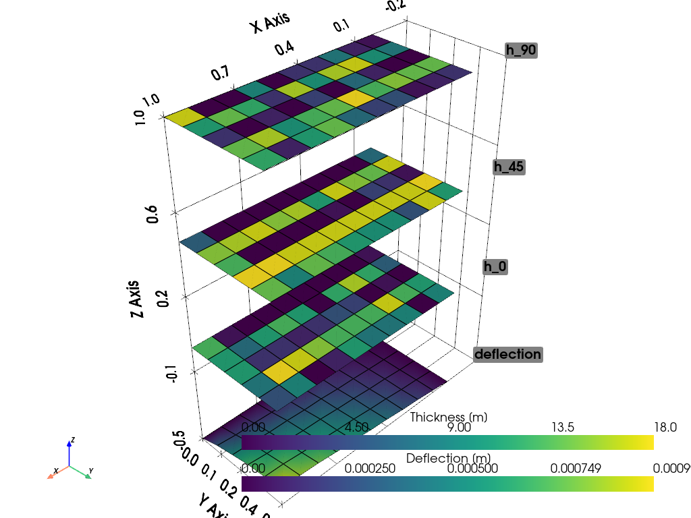

Tutorial: Ply tailoring using GA for a simply-supported plate normal load#
Date: 4 February 2026
Author: Saullo G. P. Castro
Cite this tutorial as:
Saullo G. P. Castro. (2025). General-purpose finite element solver based on Python and Cython (Version 0.6.2). Zenodo. DOI: https://doi.org/10.5281/zenodo.6573489.
Installing required modules#
[1]:
!python -m pip install numpy pyvista pymoo scipy pyfe3d > tmp.txt
DEPRECATION: Loading egg at /Users/saullogiovanip/miniconda3/lib/python3.13/site-packages/panels-0.5.0-py3.13-macosx-11.1-arm64.egg is deprecated. pip 25.1 will enforce this behaviour change. A possible replacement is to use pip for package installation. Discussion can be found at https://github.com/pypa/pip/issues/12330
DEPRECATION: Loading egg at /Users/saullogiovanip/miniconda3/lib/python3.13/site-packages/tuduam-2026.3-py3.13.egg is deprecated. pip 25.1 will enforce this behaviour change. A possible replacement is to use pip for package installation. Discussion can be found at https://github.com/pypa/pip/issues/12330
[2]:
import numpy as np
import pyvista as pv
from pymoo.core.problem import ElementwiseProblem
from pymoo.core.callback import Callback
from pymoo.algorithms.soo.nonconvex.ga import GA
from pymoo.optimize import minimize
from pymoo.operators.crossover.sbx import SBX
from pymoo.operators.mutation.pm import PM
from pymoo.operators.sampling.rnd import IntegerRandomSampling
from pymoo.operators.repair.rounding import RoundingRepair
from pymoo.termination import get_termination
from scipy.sparse.linalg import spsolve
from scipy.sparse import coo_matrix
from pyfe3d.shellprop import ShellProp
from pyfe3d import Quad4, Quad4Data, Quad4Probe, INT, DOUBLE, DOF
def get_Q_matrix(E1, E2, nu12, G12, G13, G23, theta_deg):
"""
Calculate the transformed reduced stiffness matrix Q_bar for a given angle.
"""
nu21 = nu12 * E2 / E1
denom = 1 - nu12 * nu21
Q11 = E1 / denom
Q22 = E2 / denom
Q12 = nu12 * E2 / denom
Q66 = G12
c = np.cos(np.radians(theta_deg))
s = np.sin(np.radians(theta_deg))
c2 = c**2; s2 = s**2; c4 = c**4; s4 = s**4
Q_bar_11 = Q11*c4 + 2*(Q12 + 2*Q66)*s2*c2 + Q22*s4
Q_bar_22 = Q11*s4 + 2*(Q12 + 2*Q66)*s2*c2 + Q22*c4
Q_bar_12 = (Q11 + Q22 - 4*Q66)*s2*c2 + Q12*(s4 + c4)
Q_bar_66 = (Q11 + Q22 - 2*Q12 - 2*Q66)*s2*c2 + Q66*(s4 + c4)
Q_bar_44 = G23 * c2 + G13 * s2
Q_bar_55 = G13 * c2 + G23 * s2
Q_bar_45 = (G13 - G23) * c * s
Q_bar = np.array([
[Q_bar_11, Q_bar_12, 0, 0, 0, 0],
[Q_bar_12, Q_bar_22, 0, 0, 0, 0],
[0, 0, 0, 0, 0, 0],
[0, 0, 0, Q_bar_44, Q_bar_45, 0],
[0, 0, 0, Q_bar_45, Q_bar_55, 0],
[0, 0, 0, 0, 0, Q_bar_66]
])
return Q_bar
class SmearedPlateOptimization(ElementwiseProblem):
def __init__(self, nx, ny, a, b, load_val, max_deflection, thicknesses, mat_data):
self.nx = nx
self.ny = ny
self.n_elems = (self.nx - 1)*(self.ny - 1)
self.a = a
self.b = b
self.load_val = load_val
self.max_deflection = max_deflection
self.rho = mat_data['rho']
# Pre-calculate Base Q matrices
E1, E2 = mat_data['E1'], mat_data['E2']
nu12, G12 = mat_data['nu12'], mat_data['G12']
G13, G23 = mat_data['G13'], mat_data['G23']
num_orientations = 3
self.Q0 = get_Q_matrix(E1, E2, nu12, G12, G13, G23, 0)
self.Q90 = get_Q_matrix(E1, E2, nu12, G12, G13, G23, 90)
self.Q45p = get_Q_matrix(E1, E2, nu12, G12, G13, G23, 45)
self.Q45m = get_Q_matrix(E1, E2, nu12, G12, G13, G23, -45)
self.Q45_sum = self.Q45p + self.Q45m
self.thicknesses = thicknesses
self.eid_prop = {}
n_var = num_orientations*self.n_elems
self._init_fe_model()
super().__init__(n_var=n_var,
n_obj=1,
n_ieq_constr=1,
xl=0,
xu=len(thicknesses) - 1,
vtype=int)
def _init_fe_model(self):
data = Quad4Data()
probe = Quad4Probe()
xtmp = np.linspace(0, self.a/2, self.nx)
ytmp = np.linspace(0, self.b/2, self.ny)
xmesh, ymesh = np.meshgrid(xtmp, ytmp)
ncoords = np.vstack((xmesh.T.flatten(), ymesh.T.flatten(), np.zeros_like(ymesh.T.flatten()))).T
self.ncoords = ncoords
x = ncoords[:, 0]
y = ncoords[:, 1]
z = ncoords[:, 2]
ncoords_flatten = ncoords.flatten()
self.ncoords_flatten = ncoords_flatten
nids = 1 + np.arange(ncoords.shape[0])
nid_pos = dict(zip(nids, np.arange(len(nids))))
nids_mesh = nids.reshape(self.nx, self.ny)
n1s = nids_mesh[:-1, :-1].flatten()
n2s = nids_mesh[1:, :-1].flatten()
n3s = nids_mesh[1:, 1:].flatten()
n4s = nids_mesh[:-1, 1:].flatten()
num_elements = len(n1s)
self.KC0r = np.zeros(data.KC0_SPARSE_SIZE*num_elements, dtype=INT)
self.KC0c = np.zeros(data.KC0_SPARSE_SIZE*num_elements, dtype=INT)
self.KC0v = np.zeros(data.KC0_SPARSE_SIZE*num_elements, dtype=DOUBLE)
self.N = DOF*self.nx*self.ny
self.quads = []
init_k_KC0 = 0
eid = -1
for n1, n2, n3, n4 in zip(n1s, n2s, n3s, n4s):
#NOTE dummy property
prop = ShellProp()
prop.scf_k13 = 5/6.
prop.scf_k23 = 5/6.
eid += 1
self.eid_prop[eid] = prop
pos1 = nid_pos[n1]
pos2 = nid_pos[n2]
pos3 = nid_pos[n3]
pos4 = nid_pos[n4]
r1 = ncoords[pos1]
r2 = ncoords[pos2]
r3 = ncoords[pos3]
normal = np.cross(r2 - r1, r3 - r2)[2]
assert normal > 0
quad = Quad4(probe)
quad.eid = eid
quad.n1 = n1
quad.n2 = n2
quad.n3 = n3
quad.n4 = n4
quad.c1 = DOF*nid_pos[n1]
quad.c2 = DOF*nid_pos[n2]
quad.c3 = DOF*nid_pos[n3]
quad.c4 = DOF*nid_pos[n4]
quad.init_k_KC0 = init_k_KC0
quad.update_rotation_matrix(ncoords_flatten)
quad.update_probe_xe(ncoords_flatten)
quad.update_KC0(self.KC0r, self.KC0c, self.KC0v, prop)
self.quads.append(quad)
init_k_KC0 += data.KC0_SPARSE_SIZE
def _evaluate(self, var, out, *args, **kwargs):
total_volume = 0.0
#NOTE important line below to zero the sparse matrix container
self.KC0v *= 0
for i, quad in enumerate(self.quads):
prop = self.eid_prop[quad.eid]
h0 = self.thicknesses[var[3*i]]
h45 = self.thicknesses[var[3*i + 1]]
h90 = self.thicknesses[var[3*i + 2]]
h_total = h0 + 2*h45 + h90
# Smeared Stiffness Calculation
A = (h0 * self.Q0) + (h90 * self.Q90) + (h45 * self.Q45_sum)
D = (h_total**2 / 12.0) * A
# NOTE using the full Voigt notation indices
# membrane stiffness
prop.A11 = A[0, 0]
prop.A12 = A[0, 1]
prop.A22 = A[1, 1]
prop.A66 = A[5, 5]
# transverse shear stiffness, the SCF is applied in pyfe3d
prop.E44 = A[3, 3]
prop.E45 = A[3, 4]
prop.E55 = A[4, 4]
# bending stiffness
prop.D11 = D[0, 0]
prop.D12 = D[0, 1]
prop.D22 = D[1, 1]
prop.D66 = D[5, 5]
prop.h = h_total
quad.update_probe_xe(self.ncoords_flatten)
quad.update_KC0(self.KC0r, self.KC0c, self.KC0v, prop, update_KC0v_only=1)
total_volume += quad.area * h_total
KC0 = coo_matrix((self.KC0v, (self.KC0r, self.KC0c)), shape=(self.N, self.N)).tocsc()
bk = np.zeros(self.N, dtype=bool)
x = self.ncoords[:, 0]
y = self.ncoords[:, 1]
z = self.ncoords[:, 2]
# removing in-plane motion
bk[0::DOF] = True #NOTE u displacements
bk[1::DOF] = True #NOTE v displacements
at_edges = np.isclose(x, 0.) | np.isclose(y, 0.)
bk[2::DOF][at_edges] = True #NOTE w displacements
at_sym_along_x = np.isclose(x, self.a/2)
bk[5::DOF][at_sym_along_x] = True
at_sym_along_y = np.isclose(y, self.b/2)
bk[4::DOF][at_sym_along_y] = True
bu = ~bk
# point load at center node
fext = np.zeros(self.N)
fmid = self.load_val
check = np.isclose(x, self.a/2) & np.isclose(y, self.b/2)
fext[2::DOF][check] = fmid
KC0uu = KC0[bu, :][:, bu]
# checking load balance
assert fext[bu].sum() == fmid
# solving the static system
uu = spsolve(KC0uu, fext[bu])
u = np.zeros(self.N)
u[bu] = uu
# reading the deflections in the z direction
w = u[2::DOF].reshape(self.nx, self.ny).T
self.result_w = u[2::DOF]
# reading the maximum absolute deflection
w_max = np.max(np.abs(w))
out["F"] = total_volume
out["G"] = [w_max/self.max_deflection - 1]
class HistorySaver(Callback):
def __init__(self):
super().__init__()
self.n_evals = []
self.F = [] # Objective History
self.G = [] # Constraint History
self.best_X = None # Store the best design variables here
self.best_F = None # Store best mass
self.best_G = None # Store best constraint
def notify(self, algorithm):
# Access the "optimum" (best individuals found so far)
if len(algorithm.opt) > 0:
best_ind = algorithm.opt[0]
# Save history for plotting
self.n_evals.append(algorithm.evaluator.n_eval)
self.F.append(best_ind.F[0])
g_val = best_ind.G[0] if best_ind.G is not None else 0.0
self.G.append(g_val)
# Save the specific values for the final result
# We use .copy() because X is a numpy array and we want the snapshot
self.best_X = best_ind.X.copy()
self.best_F = best_ind.F[0]
self.best_G = g_val
[3]:
if __name__ == "__main__":
# Material Data (Carbon/Epoxy approx)
mat_data = {
'E1': 140e9,
'E2': 10e9,
'nu12': 0.3,
'G12': 5e9,
'G13': 5e9,
'G23': 5e9,
'rho': 1600.0
}
# Problem definition
# allowed discrete thickness values
thicknesses = 0.125*1e-3*np.arange(1, 21)
problem = SmearedPlateOptimization(
nx=11, ny=6,
a=2.0, b=1.0,
load_val=80.0,
max_deflection=0.001,
thicknesses=thicknesses,
mat_data=mat_data
)
# Genetic Algorithm Setup
# NOTE about the eta parameter
# a low value (e.g., 2–5) creates a more flat and wide distribution, favours exploration: Offspring can be very far from parents.
# a high value (e.g., 20–30) creates a taller and narrower distribution, favours exploitation: Offspring stay very close to parents.
algorithm = GA(
pop_size=200,
sampling=IntegerRandomSampling(),
crossover=SBX(prob=1.0, eta=2, repair=RoundingRepair()),
mutation=PM(prob=0.1, eta=10, repair=RoundingRepair()),
eliminate_duplicates=True
)
# Termination criteria
termination = get_termination("n_gen", 100)
history = HistorySaver()
# Execute
res = minimize(problem,
algorithm,
termination,
seed=7,
verbose=True,
save_history=False,
callback=history)
print("Optimization Complete.")
print(f"Best Mass: {history.best_F:.4f} kg")
print(f"Max Deflection: {(history.best_G + 1)*problem.max_deflection:.4e}")
print(f"Max Deflection constraint violation: {history.best_G:.4e}")
=================================================================================
n_gen | n_eval | cv_min | cv_avg | f_avg | f_min
=================================================================================
1 | 200 | 0.3074207616 | 0.9498645000 | - | -
2 | 400 | 0.3074207616 | 0.6819816624 | - | -
3 | 600 | 0.2718360156 | 0.5820539527 | - | -
4 | 800 | 0.2524409595 | 0.5028083060 | - | -
5 | 1000 | 0.2423526994 | 0.4302689021 | - | -
6 | 1200 | 0.1309755566 | 0.3666742314 | - | -
7 | 1400 | 0.1079086246 | 0.3164371509 | - | -
8 | 1600 | 0.1051699700 | 0.2683484572 | - | -
9 | 1800 | 0.0858380415 | 0.2314240666 | - | -
10 | 2000 | 0.0546235208 | 0.1976557083 | - | -
11 | 2200 | 0.000000E+00 | 0.1674253846 | 0.0030475000 | 0.0030475000
12 | 2400 | 0.000000E+00 | 0.1362575453 | 0.0030187500 | 0.0029900000
13 | 2600 | 0.000000E+00 | 0.1117937157 | 0.0030787500 | 0.0029900000
14 | 2800 | 0.000000E+00 | 0.0918143173 | 0.0030900000 | 0.0029900000
15 | 3000 | 0.000000E+00 | 0.0735079364 | 0.0030925000 | 0.0029725000
16 | 3200 | 0.000000E+00 | 0.0557056066 | 0.0030882353 | 0.0029725000
17 | 3400 | 0.000000E+00 | 0.0393841119 | 0.0030803241 | 0.0029725000
18 | 3600 | 0.000000E+00 | 0.0232537506 | 0.0030798370 | 0.0029637500
19 | 3800 | 0.000000E+00 | 0.0120233624 | 0.0030811932 | 0.0029637500
20 | 4000 | 0.000000E+00 | 0.0040504034 | 0.0030804915 | 0.0029637500
21 | 4200 | 0.000000E+00 | 0.0001728106 | 0.0030758092 | 0.0029637500
22 | 4400 | 0.000000E+00 | 0.000000E+00 | 0.0030573000 | 0.0029637500
23 | 4600 | 0.000000E+00 | 0.000000E+00 | 0.0030375750 | 0.0029500000
24 | 4800 | 0.000000E+00 | 0.000000E+00 | 0.0030198125 | 0.0029262500
25 | 5000 | 0.000000E+00 | 0.000000E+00 | 0.0030030125 | 0.0028912500
26 | 5200 | 0.000000E+00 | 0.000000E+00 | 0.0029871687 | 0.0028775000
27 | 5400 | 0.000000E+00 | 0.000000E+00 | 0.0029701125 | 0.0028100000
28 | 5600 | 0.000000E+00 | 0.000000E+00 | 0.0029558812 | 0.0028100000
29 | 5800 | 0.000000E+00 | 0.000000E+00 | 0.0029397875 | 0.0027762500
30 | 6000 | 0.000000E+00 | 0.000000E+00 | 0.0029244812 | 0.0027762500
31 | 6200 | 0.000000E+00 | 0.000000E+00 | 0.0029112625 | 0.0027762500
32 | 6400 | 0.000000E+00 | 0.000000E+00 | 0.0028969312 | 0.0027762500
33 | 6600 | 0.000000E+00 | 0.000000E+00 | 0.0028832187 | 0.0027762500
34 | 6800 | 0.000000E+00 | 0.000000E+00 | 0.0028691562 | 0.0027237500
35 | 7000 | 0.000000E+00 | 0.000000E+00 | 0.0028550062 | 0.0027237500
36 | 7200 | 0.000000E+00 | 0.000000E+00 | 0.0028420937 | 0.0027237500
37 | 7400 | 0.000000E+00 | 0.000000E+00 | 0.0028307062 | 0.0027175000
38 | 7600 | 0.000000E+00 | 0.000000E+00 | 0.0028184062 | 0.0027162500
39 | 7800 | 0.000000E+00 | 0.000000E+00 | 0.0028072375 | 0.0027037500
40 | 8000 | 0.000000E+00 | 0.000000E+00 | 0.0027960812 | 0.0026975000
41 | 8200 | 0.000000E+00 | 0.000000E+00 | 0.0027867062 | 0.0026975000
42 | 8400 | 0.000000E+00 | 0.000000E+00 | 0.0027750312 | 0.0026975000
43 | 8600 | 0.000000E+00 | 0.000000E+00 | 0.0027632375 | 0.0026762500
44 | 8800 | 0.000000E+00 | 0.000000E+00 | 0.0027497937 | 0.0026762500
45 | 9000 | 0.000000E+00 | 0.000000E+00 | 0.0027382687 | 0.0026725000
46 | 9200 | 0.000000E+00 | 0.000000E+00 | 0.0027269562 | 0.0026487500
47 | 9400 | 0.000000E+00 | 0.000000E+00 | 0.0027147000 | 0.0026487500
48 | 9600 | 0.000000E+00 | 0.000000E+00 | 0.0027045687 | 0.0026375000
49 | 9800 | 0.000000E+00 | 0.000000E+00 | 0.0026956875 | 0.0025937500
50 | 10000 | 0.000000E+00 | 0.000000E+00 | 0.0026867187 | 0.0025937500
51 | 10200 | 0.000000E+00 | 0.000000E+00 | 0.0026776437 | 0.0025937500
52 | 10400 | 0.000000E+00 | 0.000000E+00 | 0.0026684687 | 0.0025937500
53 | 10600 | 0.000000E+00 | 0.000000E+00 | 0.0026595312 | 0.0025912500
54 | 10800 | 0.000000E+00 | 0.000000E+00 | 0.0026476375 | 0.0025812500
55 | 11000 | 0.000000E+00 | 0.000000E+00 | 0.0026412875 | 0.0025812500
56 | 11200 | 0.000000E+00 | 0.000000E+00 | 0.0026334562 | 0.0025625000
57 | 11400 | 0.000000E+00 | 0.000000E+00 | 0.0026245625 | 0.0025462500
58 | 11600 | 0.000000E+00 | 0.000000E+00 | 0.0026172875 | 0.0025462500
59 | 11800 | 0.000000E+00 | 0.000000E+00 | 0.0026108312 | 0.0025075000
60 | 12000 | 0.000000E+00 | 0.000000E+00 | 0.0026028187 | 0.0025075000
61 | 12200 | 0.000000E+00 | 0.000000E+00 | 0.0025956812 | 0.0025075000
62 | 12400 | 0.000000E+00 | 0.000000E+00 | 0.0025893375 | 0.0025075000
63 | 12600 | 0.000000E+00 | 0.000000E+00 | 0.0025811625 | 0.0024875000
64 | 12800 | 0.000000E+00 | 0.000000E+00 | 0.0025728625 | 0.0024800000
65 | 13000 | 0.000000E+00 | 0.000000E+00 | 0.0025627500 | 0.0024725000
66 | 13200 | 0.000000E+00 | 0.000000E+00 | 0.0025540500 | 0.0024725000
67 | 13400 | 0.000000E+00 | 0.000000E+00 | 0.0025460625 | 0.0024700000
68 | 13600 | 0.000000E+00 | 0.000000E+00 | 0.0025380312 | 0.0024675000
69 | 13800 | 0.000000E+00 | 0.000000E+00 | 0.0025295250 | 0.0024675000
70 | 14000 | 0.000000E+00 | 0.000000E+00 | 0.0025168750 | 0.0024462500
71 | 14200 | 0.000000E+00 | 0.000000E+00 | 0.0025042750 | 0.0024275000
72 | 14400 | 0.000000E+00 | 0.000000E+00 | 0.0024955437 | 0.0024275000
73 | 14600 | 0.000000E+00 | 0.000000E+00 | 0.0024878062 | 0.0024275000
74 | 14800 | 0.000000E+00 | 0.000000E+00 | 0.0024790375 | 0.0024275000
75 | 15000 | 0.000000E+00 | 0.000000E+00 | 0.0024738562 | 0.0024275000
76 | 15200 | 0.000000E+00 | 0.000000E+00 | 0.0024692750 | 0.0024275000
77 | 15400 | 0.000000E+00 | 0.000000E+00 | 0.0024647875 | 0.0024275000
78 | 15600 | 0.000000E+00 | 0.000000E+00 | 0.0024611687 | 0.0024087500
79 | 15800 | 0.000000E+00 | 0.000000E+00 | 0.0024564750 | 0.0024087500
80 | 16000 | 0.000000E+00 | 0.000000E+00 | 0.0024537000 | 0.0024087500
81 | 16200 | 0.000000E+00 | 0.000000E+00 | 0.0024493062 | 0.0024025000
82 | 16400 | 0.000000E+00 | 0.000000E+00 | 0.0024456125 | 0.0023962500
83 | 16600 | 0.000000E+00 | 0.000000E+00 | 0.0024418687 | 0.0023962500
84 | 16800 | 0.000000E+00 | 0.000000E+00 | 0.0024387750 | 0.0023962500
85 | 17000 | 0.000000E+00 | 0.000000E+00 | 0.0024342500 | 0.0023750000
86 | 17200 | 0.000000E+00 | 0.000000E+00 | 0.0024301187 | 0.0023750000
87 | 17400 | 0.000000E+00 | 0.000000E+00 | 0.0024283750 | 0.0023750000
88 | 17600 | 0.000000E+00 | 0.000000E+00 | 0.0024252625 | 0.0023750000
89 | 17800 | 0.000000E+00 | 0.000000E+00 | 0.0024231375 | 0.0023750000
90 | 18000 | 0.000000E+00 | 0.000000E+00 | 0.0024193500 | 0.0023750000
91 | 18200 | 0.000000E+00 | 0.000000E+00 | 0.0024158750 | 0.0023650000
92 | 18400 | 0.000000E+00 | 0.000000E+00 | 0.0024123875 | 0.0023650000
93 | 18600 | 0.000000E+00 | 0.000000E+00 | 0.0024090062 | 0.0023650000
94 | 18800 | 0.000000E+00 | 0.000000E+00 | 0.0024063375 | 0.0023650000
95 | 19000 | 0.000000E+00 | 0.000000E+00 | 0.0024029125 | 0.0023487500
96 | 19200 | 0.000000E+00 | 0.000000E+00 | 0.0024002187 | 0.0023487500
97 | 19400 | 0.000000E+00 | 0.000000E+00 | 0.0023969250 | 0.0023437500
98 | 19600 | 0.000000E+00 | 0.000000E+00 | 0.0023940500 | 0.0023437500
99 | 19800 | 0.000000E+00 | 0.000000E+00 | 0.0023911250 | 0.0023437500
100 | 20000 | 0.000000E+00 | 0.000000E+00 | 0.0023888687 | 0.0023437500
Optimization Complete.
Best Mass: 0.0023 kg
Max Deflection: 9.9921e-04
Max Deflection constraint violation: -7.9037e-04
[4]:
def plot_stacked_results(problem, history):
"""
Plot the optimised thickness distributions for h0, h45, and h90
as three stacked layers using PyVista.
"""
# 1. Retrieve Geometry from the Problem Object
ncoords = problem.ncoords
# 2. Build Connectivity for PyVista
# Determine the actual number of elements (quads) in the FE model
n_elems = len(problem.quads)
faces_quad = []
for quad in problem.quads:
# converting nid to index in the points array
faces_quad.append([4, quad.n1 - 1, quad.n2 - 1, quad.n3 - 1, quad.n4 - 1])
faces_quad = np.array(faces_quad)
base_grid = pv.PolyData(ncoords, faces_quad)
# 3. Extract Optimization Results
x_best = history.best_X
problem._evaluate(x_best, out={})
# Slice the variables with stride 3, then TRUNCATE to match the number of elements
# This discards the "ghost" variables created for the extra nodes
h0_vals = x_best[0::3]
h45_vals = x_best[1::3]
h90_vals = x_best[2::3]
# 4. Create Stacked Grids
z_offset = min(problem.a, problem.b) * 0.5
# --- Layer 0: deflection ---
grid_w = base_grid.copy()
grid_w.points[:, 2] -= z_offset
grid_w.point_data["Deflection [m]"] = problem.result_w
grid_w = grid_w.warp_by_scalar("Deflection [m]", factor=100.0)
# --- Layer 1: 0 degrees ---
grid_h0 = base_grid.copy()
grid_h0.cell_data["Thickness [m]"] = h0_vals
# --- Layer 2: +/- 45 degrees ---
grid_h45 = base_grid.copy()
grid_h45.points[:, 2] += z_offset
grid_h45.cell_data["Thickness [m]"] = h45_vals
# --- Layer 3: 90 degrees ---
grid_h90 = base_grid.copy()
grid_h90.points[:, 2] += 2 * z_offset
grid_h90.cell_data["Thickness [m]"] = h90_vals
plotter = pv.Plotter()
cmap = "viridis"
plotter.add_mesh(grid_w, scalars="Deflection [m]", cmap=cmap, show_edges=True)
plotter.add_mesh(grid_h0, scalars="Thickness [m]", cmap=cmap, show_edges=True)
plotter.add_mesh(grid_h45, scalars="Thickness [m]", cmap=cmap, show_edges=True)
plotter.add_mesh(grid_h90, scalars="Thickness [m]", cmap=cmap, show_edges=True)
label_x = -problem.a * 0.1
label_y = problem.b / 2
labels = ["deflection", "h_0", "h_45", "h_90"]
label_coords = [
[label_x, label_y, -z_offset],
[label_x, label_y, 0],
[label_x, label_y, z_offset],
[label_x, label_y, 2 * z_offset]
]
plotter.add_point_labels(
label_coords,
labels,
font_size=20,
point_size=0,
text_color="black",
always_visible=True
)
plotter.add_axes()
plotter.show_grid()
plotter.view_isometric()
plotter.show(title="Optimized Thickness Distribution per Orientation")
plot_stacked_results(problem, history)
/Users/saullogiovanip/miniconda3/lib/python3.13/site-packages/pyvista/jupyter/notebook.py:56: UserWarning: Failed to use notebook backend:
cannot import name 'vtk' from 'trame.widgets' (/Users/saullogiovanip/miniconda3/lib/python3.13/site-packages/trame/widgets/__init__.py)
Falling back to a static output.
warnings.warn(
